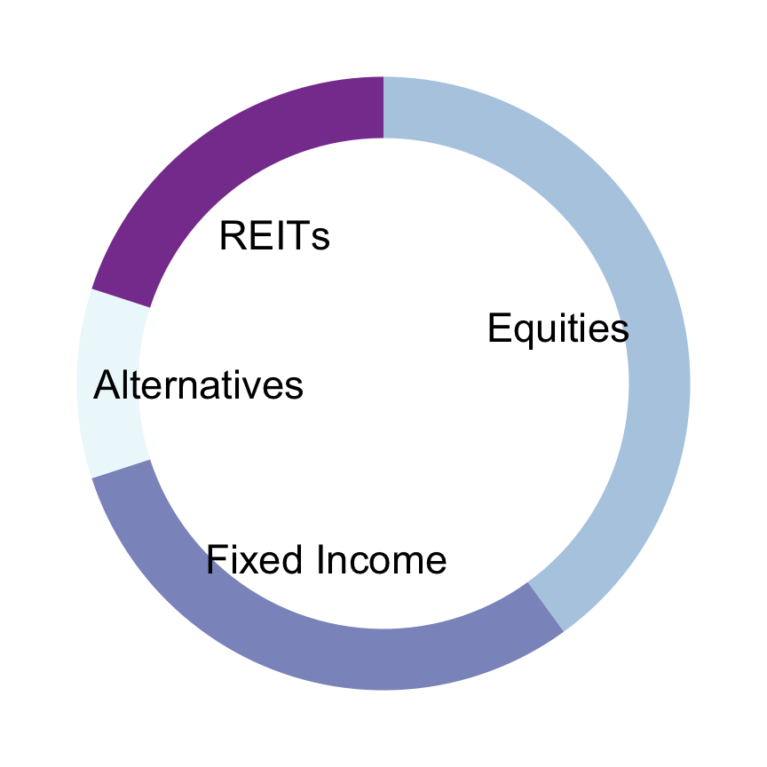

Asset Allocation
As of: Thu Nov 03 2022
|
 |
|
Equities
| Rank | C | M | V | |||
|---|---|---|---|---|---|---|
| 1 | ISHARES MSCI JAPAN SMALL-CAP | SCJ | 2 | 2 | 2 | US index futures extended their plunge on Thursday, signaling more losses for equities ahead of another 75bps rate hike (give or take) by the Bank of England. As of 730 a.m. ET, contracts on the S&P 500 dropped 0.7%, while Nasdaq 100 futures were down 0.9%, extending earlier losses |
| 2 | ISHARES CHINA LARGE-CAP ETF | FXI | 2 | 0 | 1 | hello |
| 3 | ISHARES MSCI ALL PERU CAPPED | EPU | 0 | 2 | 1 | asasdf as fda sdf daf a asdf asdf asd dfasdf asddfas dfas dfasdfas fasdf asdf |
| 4 | VANGUARD INFORMATION TECHNOLOGY ETF | VGT | 1 | 1 | 1 | asasdf as fda sdf daf a asdf asdf asd dfasdf asddfas dfas dfasdfas fasdf asdf |
| 5 | ISHARES MSCI SWEDEN CAPPED E | EWD | -1 | 1 | 1 | asdfasdfasfas |
Fixed Income
| Rank | C | M | V | |||
|---|---|---|---|---|---|---|
| 1 | VANGUARD INTERMEDIATE-TERM CORPORATE BOND ETF | VCIT | 2 | 2 | 2 | US index futures extended their plunge on Thursday, signaling more losses for equities ahead of another 75bps rate hike (give or take) by the Bank of England. As of 730 a.m. ET, contracts on the S&P 500 dropped 0.7%, while Nasdaq 100 futures were down 0.9%, extending earlier losses |
| 2 | VANGUARD LONG-TERM GOVERNMENT BOND ETF | VGLT | 2 | 0 | 1 | asdfasdfasdfasdfasfasdfasfasdfasdf fasdfsadf dsfaf asfasfadfasdfasdfasdfasfasdf |
Alternatives
| Rank | C | M | V | |||
|---|---|---|---|---|---|---|
| 1 | FANNIE MAE PFD | FNMAS | 0 | 2 | 1 | US index futures extended their plunge on Thursday, signaling more losses for equities ahead of another 75bps rate hike (give or take) by the Bank of England. As of 730 a.m. ET, contracts on the S&P 500 dropped 0.7%, while Nasdaq 100 futures were down 0.9%, extending earlier losses |
| 2 | SCHWAB U.S. TIPS ETF | SCHP | 1 | 1 | 1 | asdfasdf |
| 3 | ABRDN BLOOMBERG ALL COMMODIT | BCI | -1 | 1 | 1 | US index futures extended their plunge on Thursday, signaling more losses for equities ahead of another 75bps rate hike (give or take) by the Bank of England. As of 730 a.m. ET, contracts on the S&P 500 dropped 0.7%, while Nasdaq 100 futures were down 0.9%, extending earlier losses |
REITs
| Rank | C | M | V | |||
|---|---|---|---|---|---|---|
| 1 | Vanguard Real Estate ETF | VNQ | 2 | 2 | 2 | asdfasdf |
| 2 | Schwab U.S. REIT ETF | SCHH | 2 | 0 | 1 | US index futures extended their plunge on Thursday, signaling more losses for equities ahead of another 75bps rate hike (give or take) by the Bank of England. As of 730 a.m. ET, contracts on the S&P 500 dropped 0.7%, while Nasdaq 100 futures were down 0.9%, extending earlier losses |